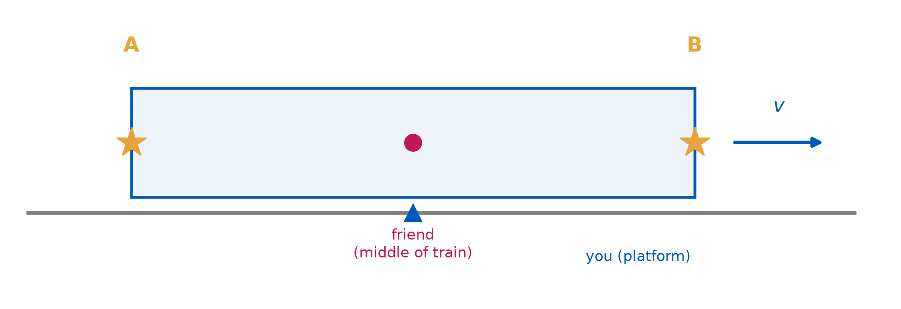
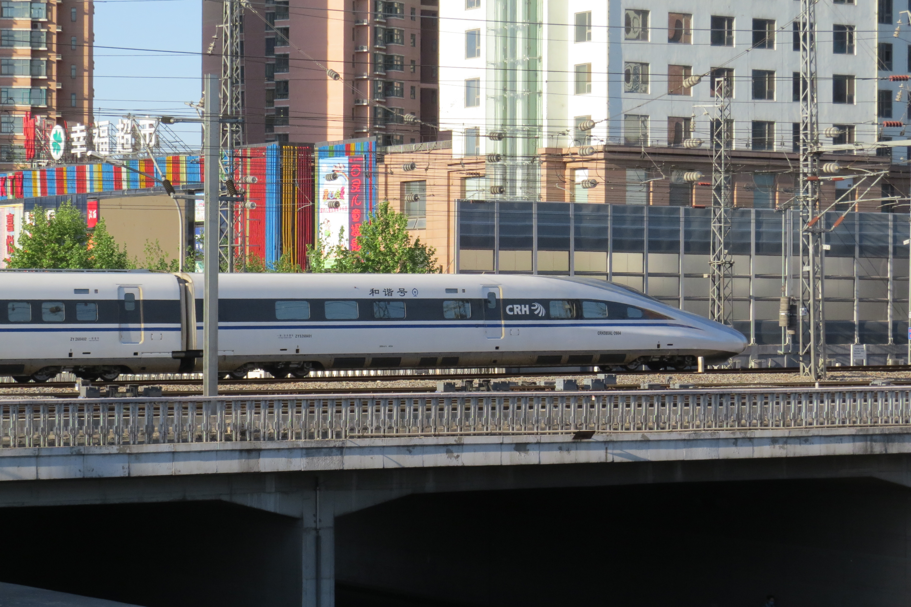
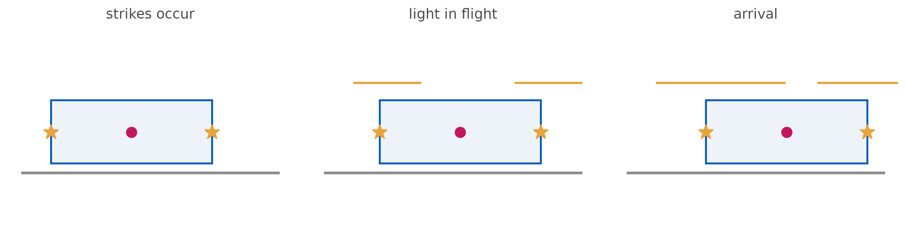
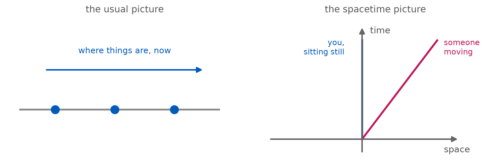
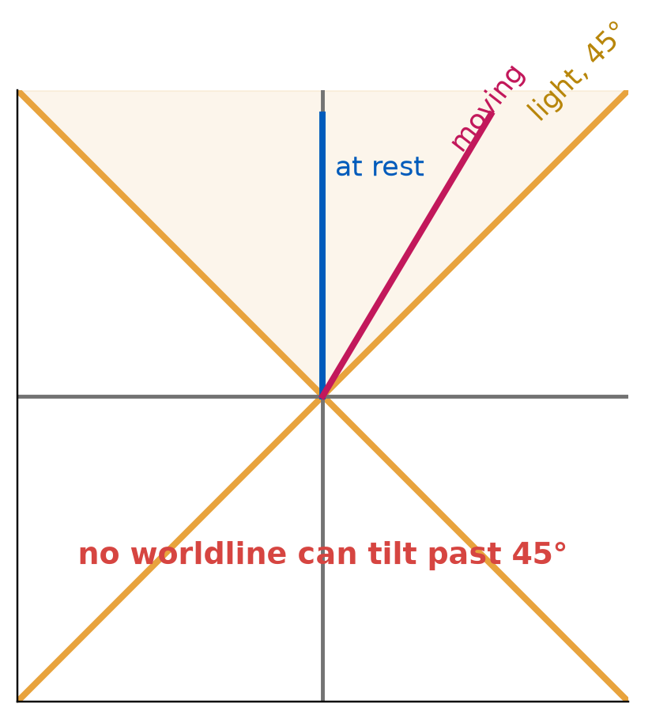
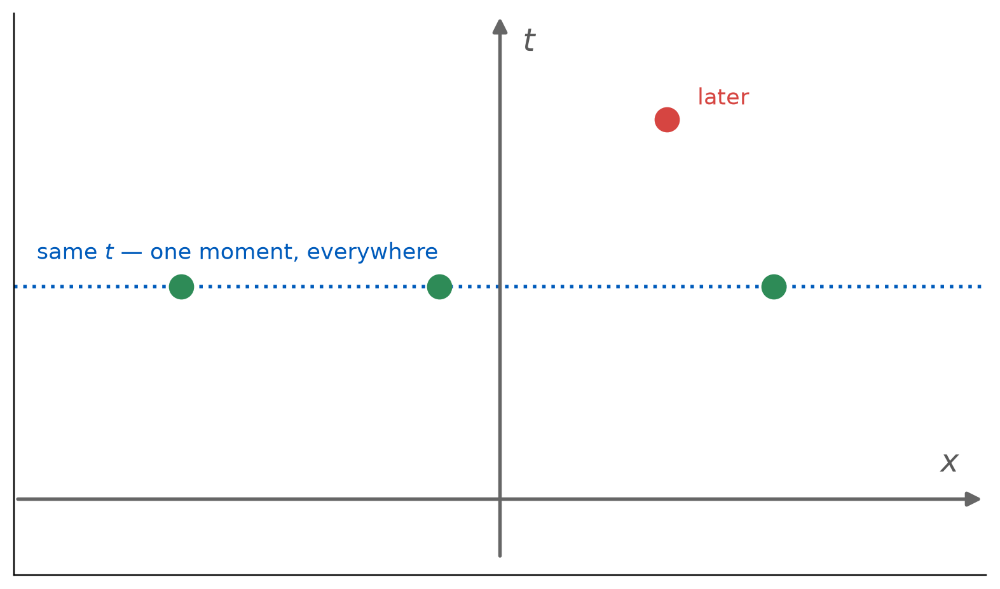
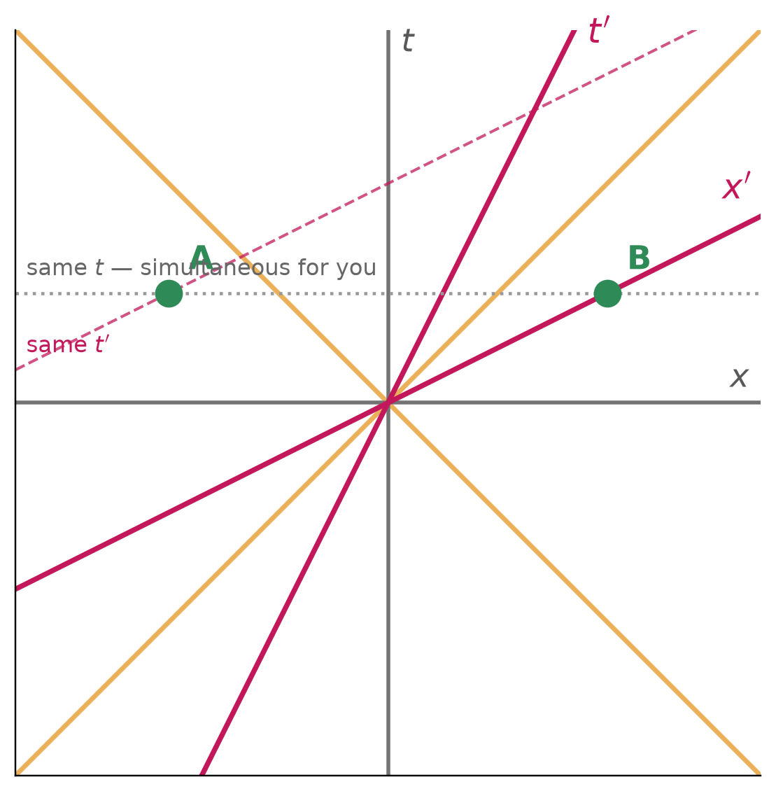
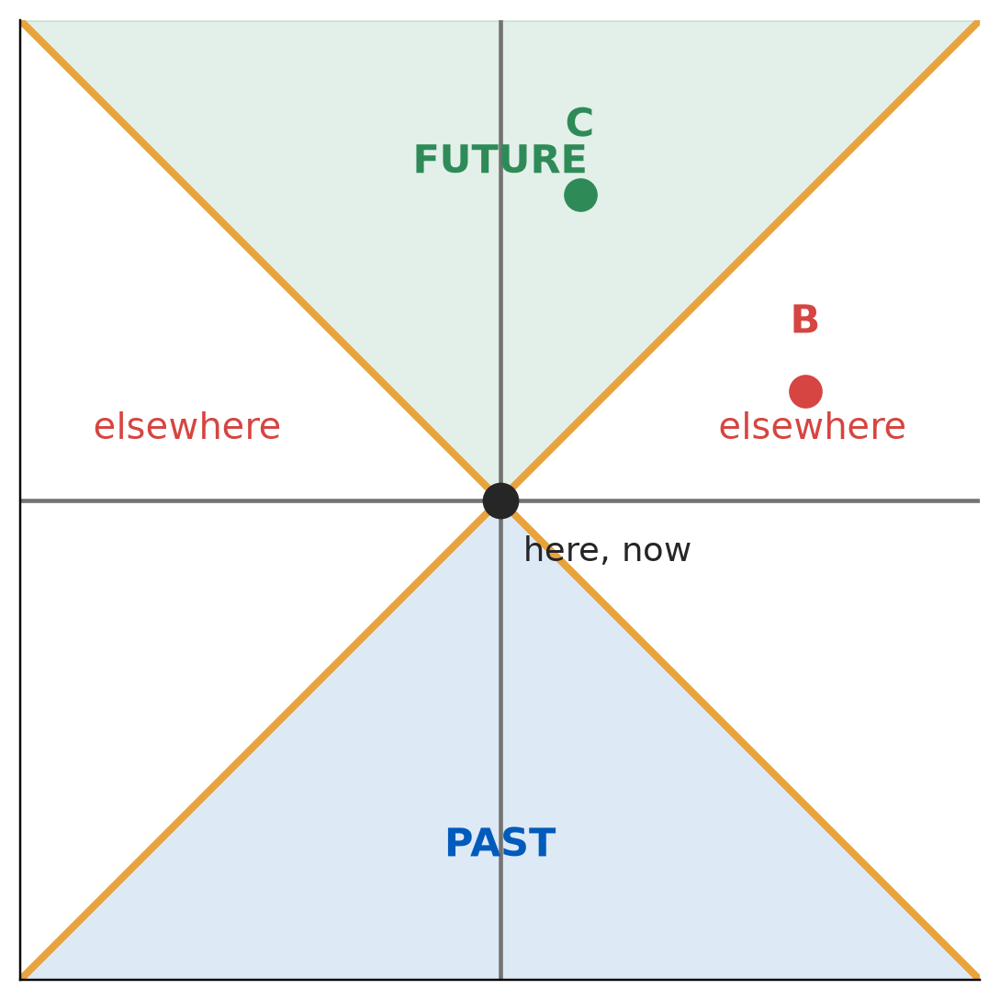
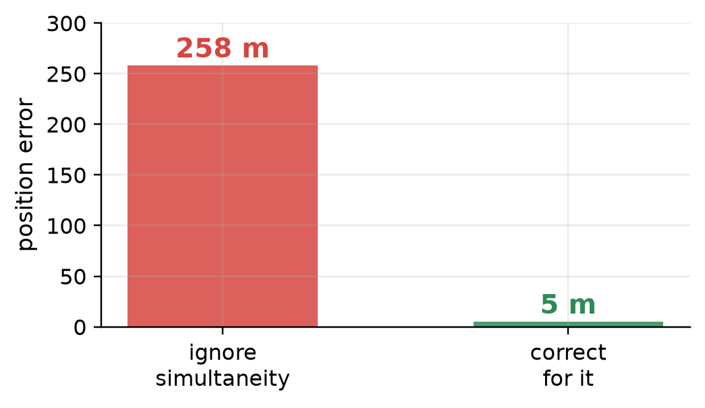

The Relativity of Simultaneity
PHY 208 · Special Relativity · Lecture 4
Tim Thomay
2026-09-03
The demo notebook
Ten minutes on how you recorded Thursday’s demonstration — not on what the interferometer did.
Then we start the physics.
Where the notebooks stand
Prediction
Landing. Almost everyone commits to something before the demo runs.
Observation
Strong. Particulars, sketches, first-attempt-vs-second.
Reconciliation
Strongest of the three. And usually the hardest to keep doing.
The part that does the learning is the part you did best.
The trap: when your prediction was right
A prediction that matches feels finished. It is not.
The template still asks: what would have made it come out differently?
“A different material.”
That answers a question nobody asked. The real one: which of my assumptions did this demo actually test?
What a good entry looks like
The strongest entry was not the one that was right.
It was the one whose prediction was falsifiable in a useful way.
“Refraction shouldn’t change once the table is done turning.”
That sentence forces you to watch during and after as separate events. It decides in advance what would count as being wrong.
So your prediction was right. Now what?
You predicted no change. There was no change. Section 3 is not finished.
Instead of “nothing to reconcile”
Ask: what else would have produced exactly what I saw?
Tapping the table changed the pattern. Turning it did not.
So which did I actually test — the ether, or the table?
What a sketch has to do
[figure withheld from the public version]
[figure withheld from the public version]
Both drew the apparatus well. Only one drew what the demo produced.
Two practical things
Photograph it flat, in daylight
Portrait, from above, no shadow across the page. Dark pen beats pencil.
Name the file, name the demo
Lastname_Demo_p1of3. Fill in the Demonstration line at the top.
Now the physics
That was the notebook. This is simultaneity.
Two lightning bolts strike the ends of a train.
You are on the platform. Your friend is on the train.
You say the strikes were simultaneous. Your friend says they were not.
Which of you is wrong?
Hands up. The platform observer? · The train observer?
Or can they both be right?
Same apparatus. Same room. Different reports.
“The pattern did not change after moving 90°.”
“It appeared to change the first time but did not.”
“The pattern changed and fluctuated while it moved.”
“Changed during the rotation, different after.”
Nobody misreported. Every one of these is correct.
The question worth stealing
“What if there is ether — but it just never gets windy?”
The Earth moves at \(30\) km/s. And in December it moves the other way.
Tuesday’s question, unresolved
You synchronized two clocks with a flash at the midpoint.
Your friend, moving at \(0.6c\), said one was set too early.
Today: she is right. And so are you.
What Tuesday gave us
A frame is a lattice of rulers and synchronized clocks.
Each event is recorded by the local clock.
Synchronization is a definition: midpoint flash, equal paths.
The train
Lightning strikes both ends. Both of you are at the midpoint when it happens.

Your account (platform)
Light from A and light from B each travel half the train’s length to reach you.
Equal distances. Equal speeds.
The two flashes reach you at the same instant.
You conclude: simultaneous.
Her account (train)
She is moving toward B and away from A.

The light from B has less ground to cover. It arrives first.
Both are right
Platform
Flashes arrive together Equal distances → simultaneous
Train
B arrives first Equal distances → B struck first
There is no fact of the matter about which came first.
“But what REALLY happened?” — the question has no answer, any more than “which end of this train is really the front?”
A new kind of picture
Stop drawing space. Start drawing space and time together.

Sitting still is a vertical line — you move through time, not space.
Light sets the scale

What “simultaneous” looks like

Simultaneous = level. One horizontal line is one moment of your time.
The man who drew time

Hermann Minkowski (1864–1909) — Einstein’s mathematics professor at ETH Zürich.
September 1908, Cologne: “Space by itself, and time by itself, are doomed to fade away into mere shadows.”
Died four months later, at 44. Einstein first called the idea “superfluous learnedness” — then built general relativity on it.
Draw your own
Everyone, on paper — four of you at the board.
Axes: \(t\) up, \(x\) across. Units: seconds and light-seconds.
Your own worldline — you are sitting still.
A light flash from your position, both directions.
Mark one event: the door opens, now-ish, over there.
Two pictures, one light line

Draw hers into yours: her light line lands on yours — her axes do not.
Now watch it move — minkowski.html
Predict first: as \(v\) grows, does A or B become earlier — and does the gold light line move?
Two events are spacelike separated — too far apart for light to travel between them.
Can an observer see them in reverse order?
(a) No — that would violate causality
(b) Yes, and it violates nothing
(c) Only for \(v > c\)
(d) Only if they are simultaneous in some frame
Putting numbers on it
Train of proper length \(L = 300\) m, moving at \(v = 0.6c\).
Offset between the two strikes in her frame: \(\Delta t' = \dfrac{\gamma v L}{c^{2}}\)
gamma = 1.2500
Delta t' = 0.7505 microseconds
light covers = 225.0 m in that timeThe scale of it
| Speed | Offset across a 300 m train |
|---|---|
| 30 m/s (a real train) | \(1.0\times10^{-13}\) s |
| 0.001 \(c\) | \(1.0\times10^{-9}\) s |
| 0.6 \(c\) | \(7.5\times10^{-7}\) s |
The light cone

Timelike, spacelike, lightlike
Timelike
Inside the cone.
A signal can connect them.
Time order is fixed — every frame agrees.
Spacelike
Outside the cone.
No signal can connect them.
Time order is frame-dependent.
Lightlike
On the cone.
Only light connects them.
Order fixed; separation zero.
Frames disagree about order only where disagreement cannot cause trouble.
The objection you are all having
“But she’s moving. Surely she should correct for that, and then she’d agree with the platform.”
There is nothing to correct. She is at rest in her own frame.
Two frames, side by side
Platform frame
The train is moving.
The platform lattice is synchronized.
The train’s clocks are not synchronized — the front one lags.
Train frame
The platform is moving.
The train lattice is synchronized.
The platform’s clocks are not synchronized — by the same rule.
Each says the other’s clocks are out of step. Both are correct.
Activity
Self-check with a partner — simultaneity
§II on the handout: Alan on the ground, Beth on the train, two sparks.
Do A (Alan’s frame), then B (Beth’s frame). Swap and mark.
What today actually changed
You still have
Light at \(c\) in every frame
A lattice that measures cleanly
Agreement on what happens at an event
Causal order, wherever it matters
You have lost
A universal “now”
Frame-independent simultaneity
The idea that one frame is the real one
Where this actually bites
GPS. Satellites move at ~3.9 km/s. Across the constellation the simultaneity offset runs to
\[\Delta t' = \frac{vL}{c^2} \approx 860\ \text{ns}\]

Ignore it and your position is wrong by about 260 m.
And where it decides the physics
Particle colliders. LHC bunches cross every 25 ns — light moves 7.5 m in that time. Which collision happened “first” is frame-dependent; the detector timing must be defined, not assumed.
Neutrino timing, 2011. OPERA reported neutrinos arriving 60 ns early — apparently faster than light.
The error was a loose fibre-optic cable and a clock offset. A synchronization fault.
What this costs Newton
| Newton | Einstein |
|---|---|
| One universal time for everyone | Each frame has its own time |
| “Now” extends across the universe | “Now” is frame-dependent |
| Simultaneity is a fact | Simultaneity is a relation |
| Space and time independent | Mixed by motion |
Next week
Time dilation
If we cannot agree on which events are simultaneous, we certainly cannot agree on how long things take.
Reading: TW ch. 3 · Prep check 2 due Tue 10:30
Exit ticket
A student says: “The train observer only THINKS the strikes weren’t simultaneous — she just received the light at different times.”
In one or two sentences, what is wrong with this?
Scan it, or find it on UB Learns. Due 11:59 tonight.
Not graded, ever — I read these to decide what to spend class time on. “I don’t follow this, and here is where I lost it” is a useful answer.
PHY 208 — The Relativity of Simultaneity Tim Thomay · University at Buffalo · Fall 2026
Course material licensed CC BY-SA 4.0
Images retain their original licenses — see img/CREDITS.md